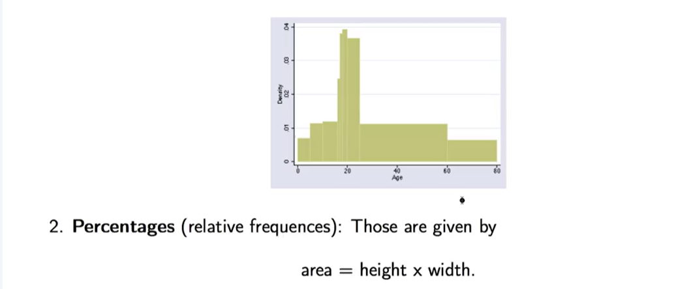
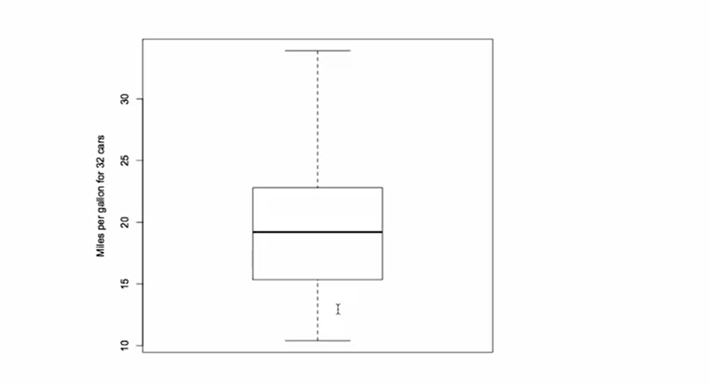
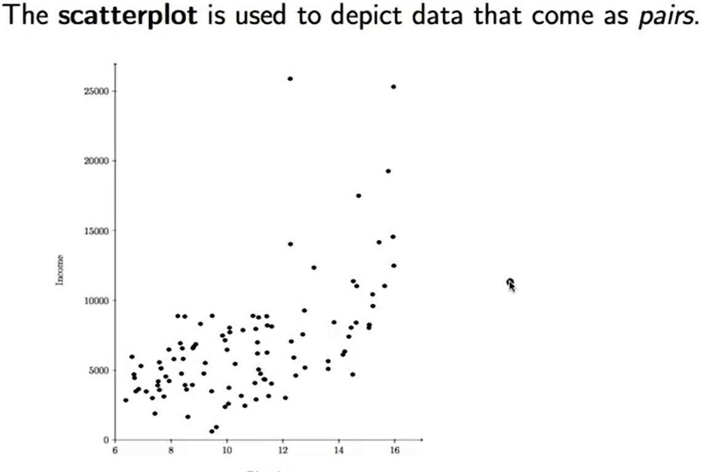
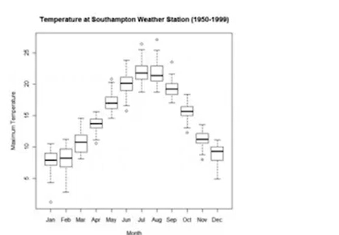
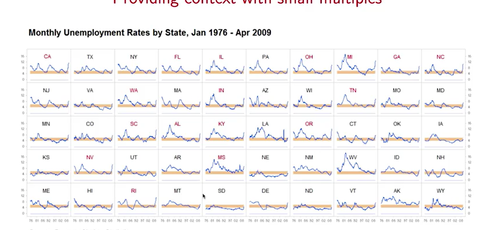

Descriptive Statistics - Simplified Summary#
Descriptive statistics help us understand data using numbers and visuals.
People find pictures (like graphs) easier to understand than long lists of numbers.
Example: A graph of shuttle launch temperatures showed that the Challenger launch was much colder than others, helping explain the accident.
Descriptive statistics are useful for:
Showing information clearly
Making it easier to think about and analyze data
Summarizing large amounts of data Here’s a simplified version of your explanation on how to summarize and visualize data:
📊 Visualizing and Summarizing Data#
There are two main ways to summarize data:
Numerical summaries – like averages and percentages.
Graphical summaries – like charts and plots.
People often prefer visuals, as they are easier to understand.
📌 When the Data is Qualitative (Categories like colors or places):#
Use Pie Charts or Dot Plots.
Pie Chart:
Each slice shows the percentage of each category.
Good for seeing what part of the whole a category represents.
Dot Plot:
Dots represent categories on a horizontal line.
Good for comparing between categories more easily.
✅ Example: For student origins, it’s easier to compare in a dot plot but easier to see total share in a pie chart.
📌 When the Data is Quantitative (Numbers):#
Use visual tools that show numbers on a number line because:
The order and distance between values matter.
Bar Graph:
Best for showing how often each number appears.
Like a vertical dot plot.
Histogram:
Similar to a bar graph but allows for different bin widths.
Focuses on area of the bar, not just height.
🔸 The area of each block = percentage of data. 🔸 You can estimate percentages visually or by calculation:
Area = Height × WidthIf height = 0.7% per year and width = 20 years → Area = 14%
Density Scale (vertical axis on histogram):
Shows crowding per unit (like “percent per year”).
Helps compare how packed or sparse data is in a range.
🔍 Example: Ages 60–80 cover 20 years with a low height (0.7% per year), so ~14% of people fall in this range.

#
Choose the right chart based on data type (category vs number).
Pie charts show share of total; dot plots show comparison.
Histograms use area to represent percentages, not just height.
Density tells how tightly data is packed per unit on the scale.
Here’s a simplified summary of your explanation on boxplots and scatter plots, focusing on the key points in a concise and clear manner:
📦 Boxplot (Box-and-Whisker Plot)#
A boxplot shows five key summary numbers from the data:
Minimum (lower whisker)
First Quartile (Q1) – 25% of data is below this
Median (Q2) – 50% of data is below this
Third Quartile (Q3) – 75% of data is below this
Maximum (upper whisker)
📌 Example#
Data: Fuel consumption (miles per gallon) of 32 cars
~Min: 10 MPG
~Q1: 15 MPG
~Median: 19 MPG
~Q3: 30 MPG
~Max: 35 MPG

✅ Advantages#
Takes up less space than a histogram.
Great for comparing multiple groups side by side.
Doesn’t require choosing intervals like in histograms.
Good for showing spread, skew, and outliers.
📊 Use Case#
Comparing MPG across cars with different cylinder counts.
Shows that cars with fewer cylinders have better fuel economy.
Demonstrates the principle of small multiples (comparing multiple datasets in the same visual format).
🔷 Scatter Plot#
Used when data comes in pairs (two variables per data point).
Plots values on a coordinate grid (x, y).
📌 Example#
X-axis: Years of education
Y-axis: Income in dollars
A person with 12 years of education may earn ~$15,000. 
✅ Advantages#
Shows relationships between two variables.
In this example, more education → higher income.
Can reveal trends, patterns, or correlations (e.g., positive trend).
🎯 Summary#
Plot Type |
Shows |
Best For |
|---|---|---|
Boxplot |
5-number summary |
Comparing multiple groups easily |
Scatter Plot |
Relationship between 2 vars |
Exploring trends and correlations |
Histogram |
Frequency distribution |
Detailed shape of numeric data |
Here’s a simplified and clear summary of your explanation on the purpose of statistical analysis and the principle of small multiples in data visualization:
🎯 Purpose of Statistical Analysis#
The goal is to compare observed data to a reference or baseline.
This comparison helps identify patterns, differences, or anomalies.
To make comparisons easier, we often visualize data with context.
📘 Edward Tufte’s Principle: Small Multiples#
From The Visual Display of Quantitative Information by Edward Tufte:
“Small multiples” are a series of similar graphics, using the same scale and structure, shown side-by-side for comparison.
📦 Example 1: Monthly Temperature Boxplots#
A boxplot is shown for each month using 50 years of temperature data.
Example: The January boxplot shows 50 values for January.
This layout makes it easy to compare how temperature varies across months.
❗ Why it works: Our brain easily spots patterns when visuals are repeated and aligned.

📈 Example 2: State-wise Unemployment Time Series#
Each state has its own time series plot of unemployment (1976–2009).
X-axis: Time
Y-axis: Unemployment rate
An orange band marks the “normal” range (4–6%).

✅ What we observe:
Big spikes during the financial crisis in states like California & Michigan.
States like Montana & South Dakota show more stable patterns.
🧠 Why Small Multiples Work Well#
Human brains are excellent at comparing consistent visual patterns.
They enable quick comparison across groups, time, or categories without mental effort.
Ideal for showing change over time, group variation, or regional differences.
🧩 Summary Table#
Concept |
Purpose |
Example |
|---|---|---|
Statistical Analysis |
Compare data to a reference/baseline |
Temp changes over months or states |
Small Multiples |
Show multiple similar plots for comparison |
Monthly boxplots, state-wise time series |
Context in Graphics |
Help interpret visuals with background info |
Normal bands, consistent axes |
🎨 Graphic Design in Data Visualization#
Modern tools let us create flashy graphics, but flashiness often reduces clarity.
Example: A 3D bar chart comparing donations to three universities:
Harvard: $683 million
Stanford: $469 million
Columbia: $359 million
❌ Problems with 3D Bar Charts#
Makes it harder to read exact values due to perspective.
We perceive volume, but the data is about height.
Bases of the bars are misaligned, adding confusion.
Grid lines try to help, but only make the chart more cluttered.
✅ Better Alternative#
Use a dot plot or simple 2D bar chart to clearly compare values.
Cleaner visuals = better understanding.
💡 Fun Reference#
Check out Peter Norvig’s Gettysburg PowerPoint parody to see how overusing flashy slides can ruin a powerful message.